2023 National 5 Biology - Paper 2 questions
Source: Scottish Qualifications Authority (SQA) / Qualifications Scotland. This is a StemInteract HTML companion, not an official HTML edition. Selectable text is supplied alongside original page images. Use the images or original PDF for equations, powers, fractions, vector notation, tables and diagrams; text extraction cannot fully preserve mathematical layout.
Jump to a question
PDF page 1
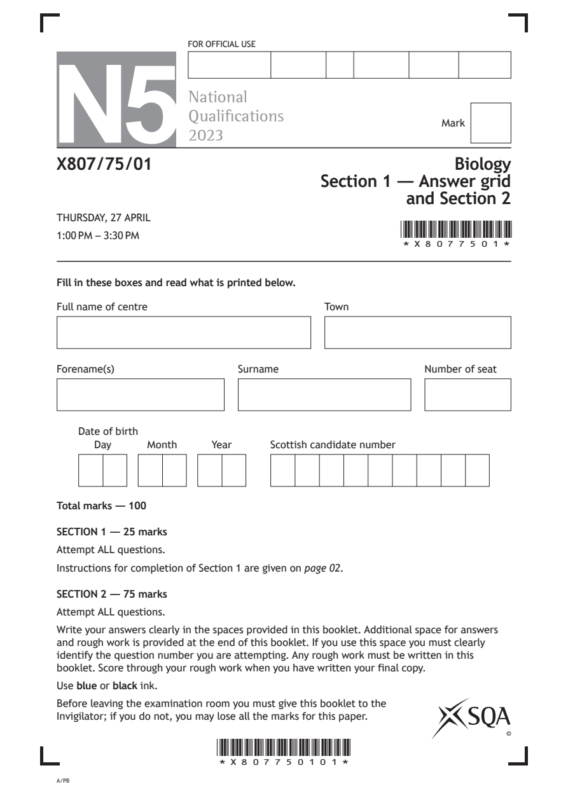
Selectable page text
FOR OFFICIAL USE
N5
National
Qualications
Mark
2023
X807/75/01 Biology
Section 1 — Answer grid
and Section 2
THURSDAY, 27 APRIL
1:00 PM – 3:30 PM
*X8077501*
Fill in these boxes and read what is printed below.
Full name of centre Town
Forename(s) Surname Number of seat
Date of birth
Day Month Year Scottish candidate number
Total marks — 100
SECTION 1 — 25 marks
Attempt ALL questions.
Instructions for completion of Section 1 are given on page 02.
SECTION 2 — 75 marks
Attempt ALL questions.
Write your answers clearly in the spaces provided in this booklet. Additional space for answers
and rough work is provided at the end of this booklet. If you use this space you must clearly
identify the question number you are attempting. Any rough work must be written in this
booklet. Score through your rough work when you have written your final copy.
Use blue or black ink.
Before leaving the examination room you must give this booklet to the
Invigilator; if you do not, you may lose all the marks for this paper.
©
*X807750101*
A/PBPDF page 2

Selectable page text
SECTION 1 — 25 marks
The questions for Section 1 are contained in the question paper X807/75/02.
Read these and record your answers on the answer grid on page 03 opposite.
Use blue or black ink. Do NOT use gel pens or pencil.
1. The answer to each question is either A, B, C or D. Decide what your answer is, then fill in
the appropriate bubble (see sample question below).
2. There is only one correct answer to each question.
3. Any rough working should be done on the additional space for answers and rough work at
the end of this booklet.
Sample question
The thigh bone is called the
A humerus
B femur
C tibia
D fibula.
The correct answer is B — femur. The answer B bubble has been clearly filled in (see below).
A B C D
Changing an answer
If you decide to change your answer, cancel your first answer by putting a cross through it (see
below) and fill in the answer you want. The answer below has been changed to D.
A B C D
If you then decide to change back to an answer you have already scored out, put a tick (✓) to the
right of the answer you want, as shown below:
A B C D A B C D
or
*X807750102*
page 02PDF page 3
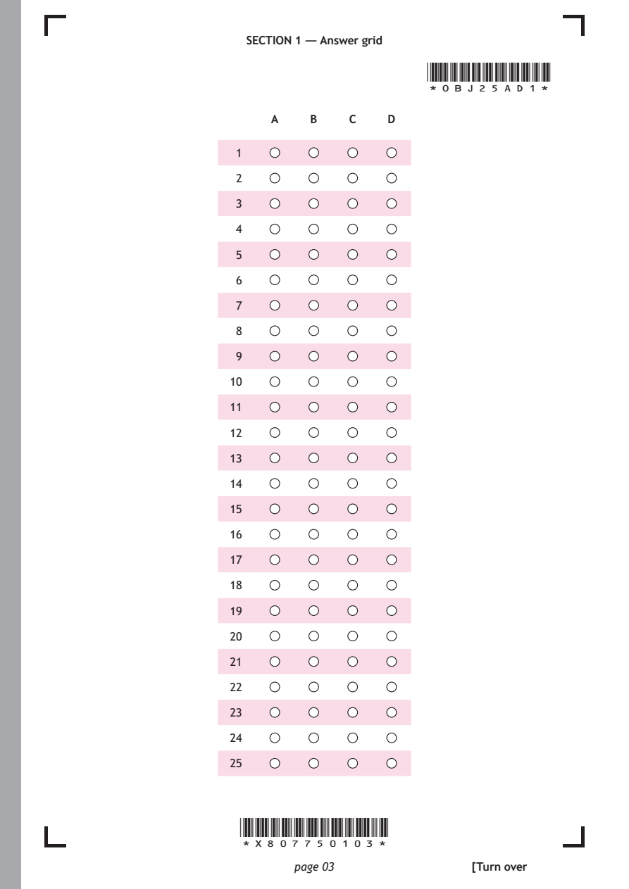
Selectable page text
SECTION 1 — Answer grid
*OBJ25AD1*
A B C D
1
2
3
4
5
6
7
8
9
10
11
12
13
14
15
16
17
18
19
20
21
22
23
24
25
*X807750103*
page 03 [Turn overPDF page 4
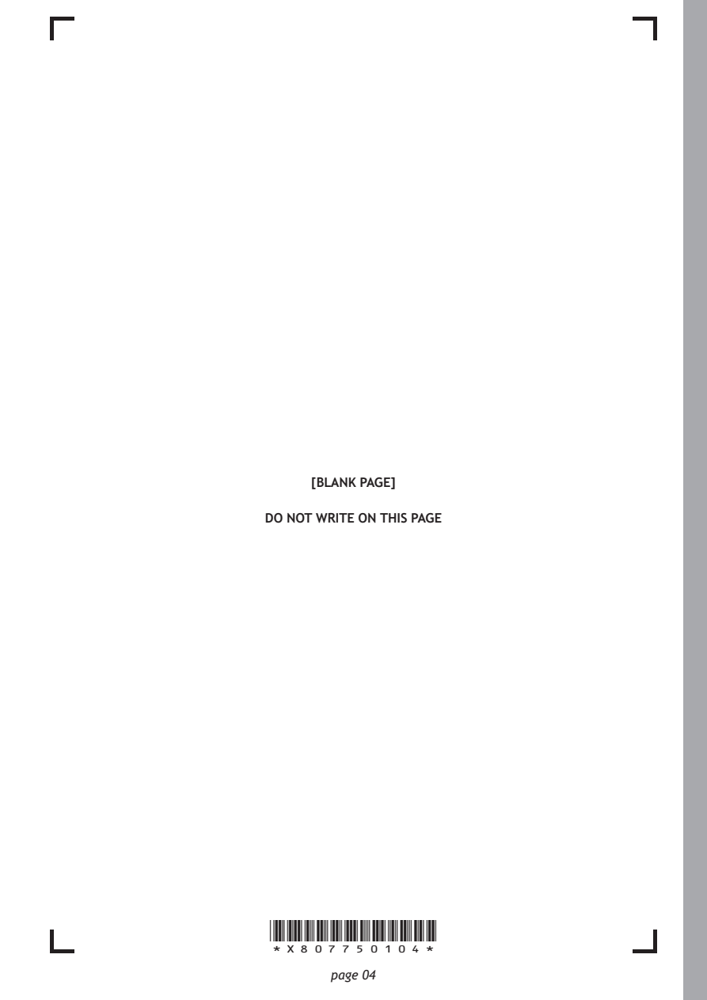
Selectable page text
[BLANK PAGE]
DO NOT WRITE ON THIS PAGE
*X807750104*
page 04PDF page 5
Paper 2, Question 1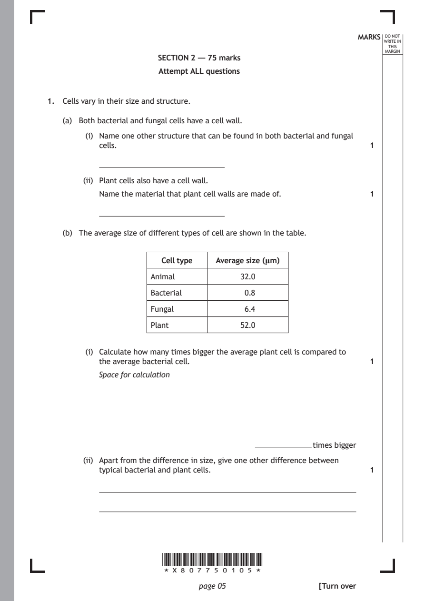
Selectable page text
MARKS _{W}^{D}_{R}^{O}_{I} _{T}^{N}OT
E IN
THIS
MARGIN
SECTION 2 — 75 marks
Attempt ALL questions
1. Cells vary in their size and structure.
(a) Both bacterial and fungal cells have a cell wall.
(i) Name one other structure that can be found in both bacterial and fungal
cells. 1
(ii) Plant cells also have a cell wall.
Name the material that plant cell walls are made of. 1
(b) The average size of different types of cell are shown in the table.
Cell type Average size (μm)
Animal 32.0
Bacterial 0.8
Fungal 6.4
Plant 52.0
(i) Calculate how many times bigger the average plant cell is compared to
the average bacterial cell. 1
Space for calculation
times bigger
(ii) Apart from the difference in size, give one other difference between
typical bacterial and plant cells. 1
*X807750105*
page 05 [Turn overPDF page 6
Paper 2, Question 2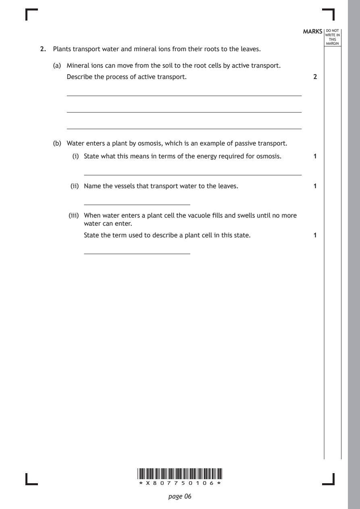
Selectable page text
MARKS _{W}^{D}_{R}^{O}_{I} _{T}^{N}OT
E IN
THIS
MARGIN
2. Plants transport water and mineral ions from their roots to the leaves.
(a) Mineral ions can move from the soil to the root cells by active transport.
Describe the process of active transport. 2
(b) Water enters a plant by osmosis, which is an example of passive transport.
(i) State what this means in terms of the energy required for osmosis. 1
(ii) Name the vessels that transport water to the leaves. 1
(iii) When water enters a plant cell the vacuole fills and swells until no more
water can enter.
State the term used to describe a plant cell in this state. 1
*X807750106*
page 06PDF page 7
Paper 2, Question 3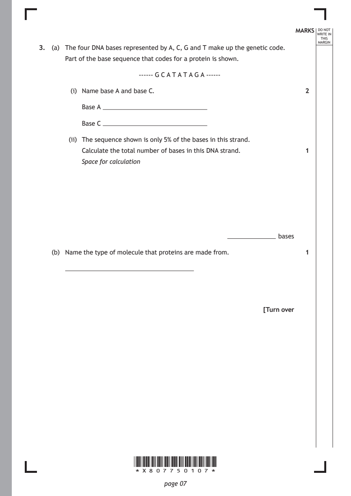
Selectable page text
MARKS _{W}^{D}_{R}^{O}_{I} _{T}^{N}OT
E IN
THIS
MARGIN
3. (a) The four DNA bases represented by A, C, G and T make up the genetic code.
Part of the base sequence that codes for a protein is shown.
------ G C A T A T A G A ------
(i) Name base A and base C. 2
Base A
Base C
(ii) The sequence shown is only 5% of the bases in this strand.
Calculate the total number of bases in this DNA strand. 1
Space for calculation
bases
(b) Name the type of molecule that proteins are made from. 1
[Turn over
*X807750107*
page 07PDF page 8
Paper 2, Question 4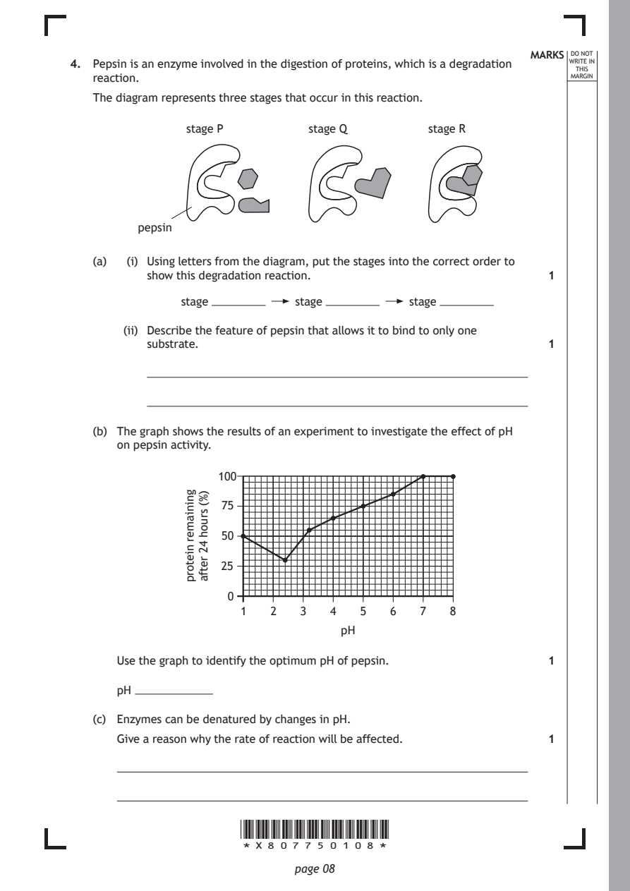
Selectable page text
MARKS _{W}^{D}_{R}^{O}_{I} _{T}^{N}OT
4. Pepsin is an enzyme involved in the digestion of proteins, which is a degradation E IN
THIS
reaction. MARGIN
The diagram represents three stages that occur in this reaction.
stage P stage Q stage R
pepsin
(a) (i) Using letters from the diagram, put the stages into the correct order to
show this degradation reaction.
stage stage stage
(ii) Describe the feature of pepsin that allows it to bind to only one
substrate.
(b) The graph shows the results of an experiment to investigate the effect of pH
on pepsin activity.
*X807750108*
page 08
gniniamer
nietorp
)%(
sruoh
42
retfa
1
1
100
75
50
25
0
1 2 3 4 5 6 7 8
pH
Use the graph to identify the optimum pH of pepsin. 1
pH
(c) Enzymes can be denatured by changes in pH.
Give a reason why the rate of reaction will be affected. 1PDF page 9
Paper 2, Question 5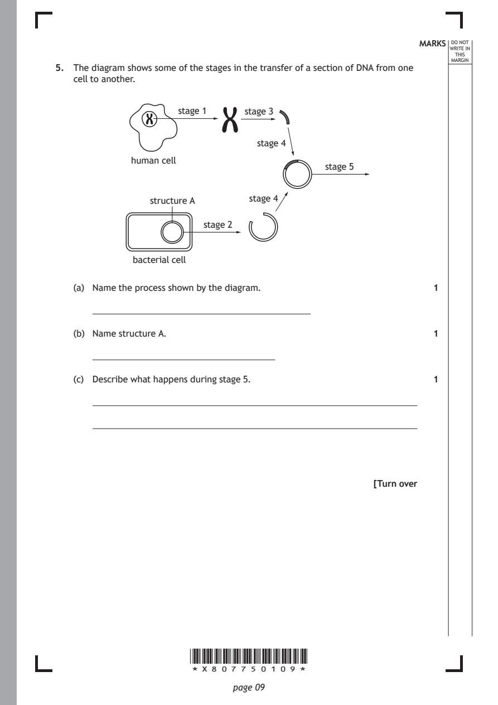
Selectable page text
MARKS _{W}^{D}_{R}^{O}_{I} _{T}^{N}OT
E IN
THIS
MARGIN
5. The diagram shows some of the stages in the transfer of a section of DNA from one
cell to another.
stage 1 stage 3
stage 4
human cell
stage 5
structure A stage 4
stage 2
bacterial cell
(a) Name the process shown by the diagram. 1
(b) Name structure A. 1
(c) Describe what happens during stage 5. 1
[Turn over
*X807750109*
page 09PDF page 10
Paper 2, Question 6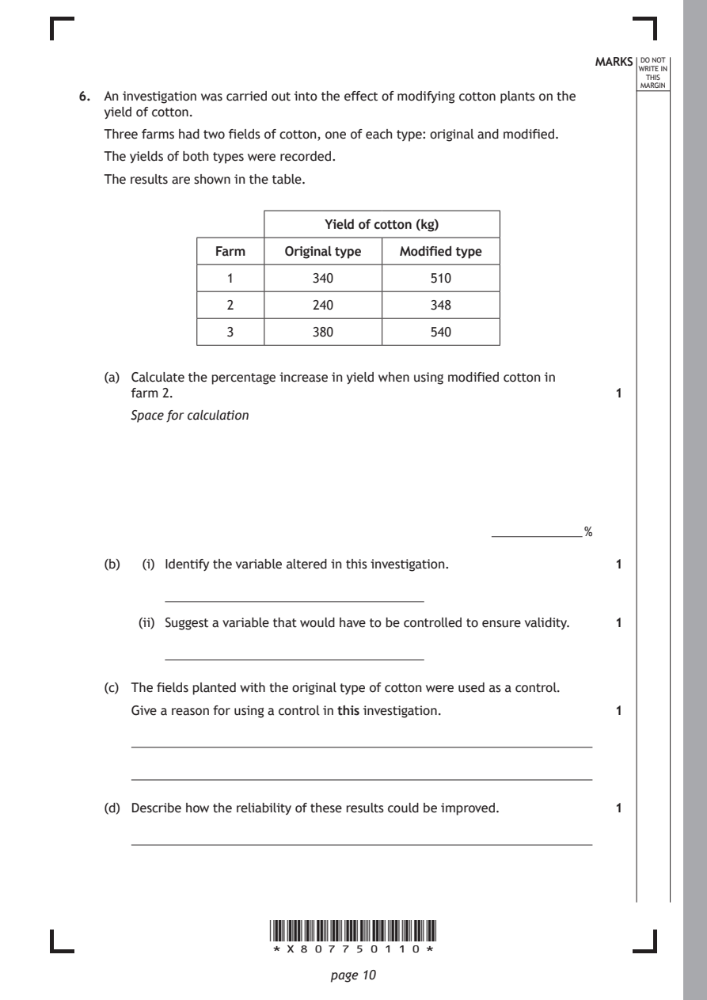
Selectable page text
MARKS _{W}^{D}_{R}^{O}_{I} _{T}^{N}OT
E IN
THIS
MARGIN
6. An investigation was carried out into the effect of modifying cotton plants on the
yield of cotton.
Three farms had two fields of cotton, one of each type: original and modified.
The yields of both types were recorded.
The results are shown in the table.
Yield of cotton (kg)
Farm Original type Modified type
1 340 510
2 240 348
3 380 540
(a) Calculate the percentage increase in yield when using modified cotton in
farm 2. 1
Space for calculation
%
(b) (i) Identify the variable altered in this investigation. 1
(ii) Suggest a variable that would have to be controlled to ensure validity. 1
(c) The fields planted with the original type of cotton were used as a control.
Give a reason for using a control in this investigation. 1
(d) Describe how the reliability of these results could be improved. 1
*X807750110*
page 10PDF page 11
Paper 2, Question 7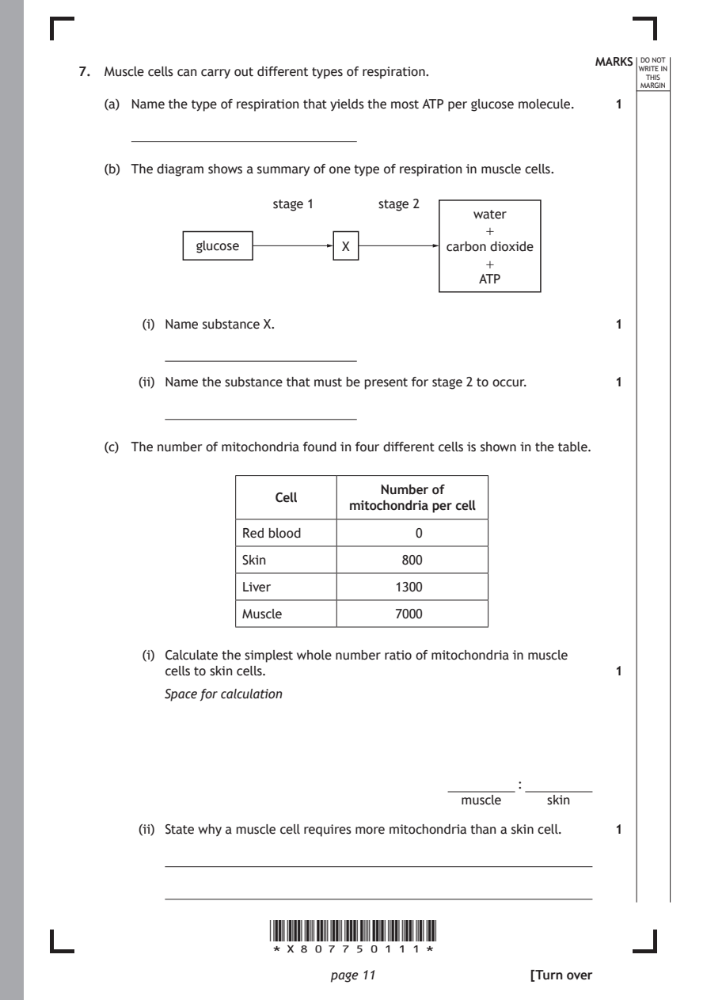
Selectable page text
MARKS _{W}^{D}_{R}^{O}_{I} _{T}^{N}OT
7. Muscle cells can carry out different types of respiration. E IN
THIS
MARGIN
(a) Name the type of respiration that yields the most ATP per glucose molecule. 1
(b) The diagram shows a summary of one type of respiration in muscle cells.
stage 1 stage 2
water
+
glucose X carbon dioxide
+
ATP
(i) Name substance X. 1
(ii) Name the substance that must be present for stage 2 to occur. 1
(c) The number of mitochondria found in four different cells is shown in the table.
Number of
Cell
mitochondria per cell
Red blood 0
Skin 800
Liver 1300
Muscle 7000
(i) Calculate the simplest whole number ratio of mitochondria in muscle
cells to skin cells. 1
Space for calculation
:
muscle skin
(ii) State why a muscle cell requires more mitochondria than a skin cell. 1
*X807750111*
page 11 [Turn overPDF page 12
Paper 2, Question 8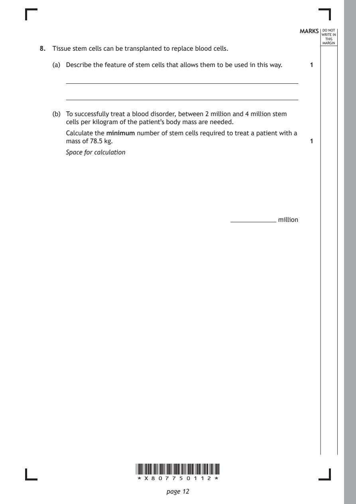
Selectable page text
MARKS _{W}^{D}_{R}^{O}_{I} _{T}^{N}OT
E IN
THIS
MARGIN
8. Tissue stem cells can be transplanted to replace blood cells.
(a) Describe the feature of stem cells that allows them to be used in this way. 1
(b) To successfully treat a blood disorder, between 2 million and 4 million stem
cells per kilogram of the patient’s body mass are needed.
Calculate the minimum number of stem cells required to treat a patient with a
mass of 78.5 kg. 1
Space for calculation
million
*X807750112*
page 12PDF page 13
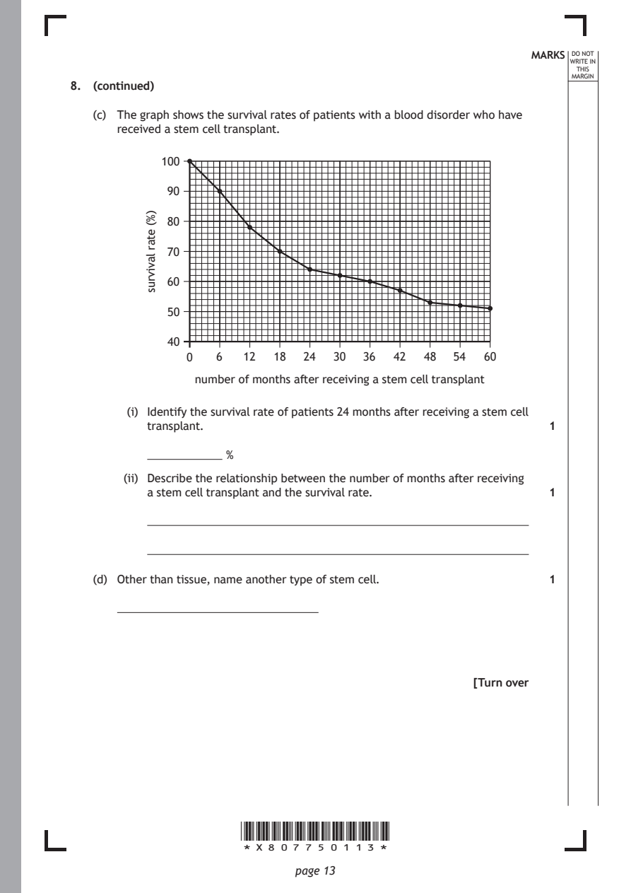
Selectable page text
MARKS _{W}^{D}_{R}^{O}_{I} _{T}^{N}OT
E IN
THIS
MARGIN
8. (continued)
(c) The graph shows the survival rates of patients with a blood disorder who have
received a stem cell transplant.
*X807750113*
page 13
)%(
etar
lavivrus
100
90
80
70
60
50
40
0 6 12 18 24 30 36 42 48 54 60
number of months after receiving a stem cell transplant
(i) Identify the survival rate of patients 24 months after receiving a stem cell
transplant. 1
%
(ii) Describe the relationship between the number of months after receiving
a stem cell transplant and the survival rate. 1
(d) Other than tissue, name another type of stem cell. 1
[Turn overPDF page 14
Paper 2, Question 9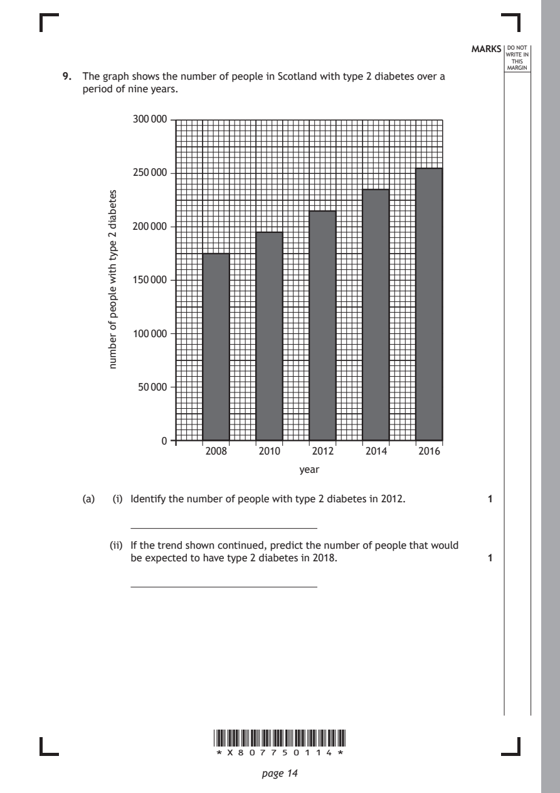
Selectable page text
MARKS _{W}^{D}_{R}^{O}_{I} _{T}^{N}OT
E IN
THIS
MARGIN
9. The graph shows the number of people in Scotland with type 2 diabetes over a
period of nine years.
*X807750114*
page 14
setebaid
2
epyt
htiw
elpoep
fo
rebmun
300 000
250 000
200 000
150 000
100 000
50 000
0
2008 2010 2012 2014 2016
year
(a) (i) Identify the number of people with type 2 diabetes in 2012. 1
(ii) If the trend shown continued, predict the number of people that would
be expected to have type 2 diabetes in 2018. 1PDF page 15
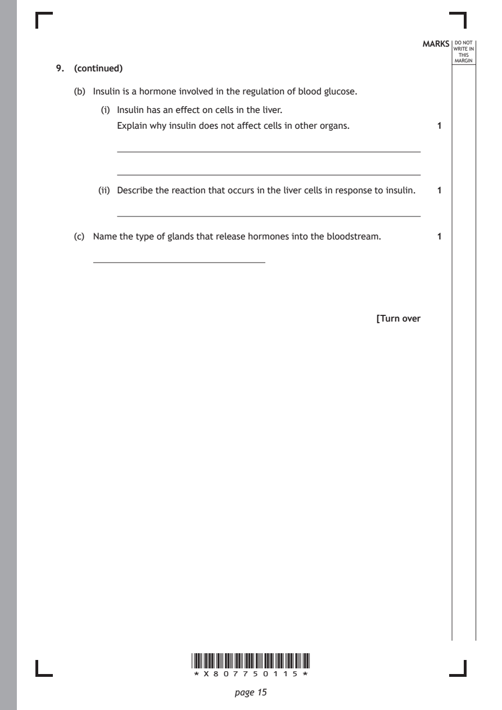
Selectable page text
MARKS _{W}^{D}_{R}^{O}_{I} _{T}^{N}OT
E IN
THIS
MARGIN
9. (continued)
(b) Insulin is a hormone involved in the regulation of blood glucose.
(i) Insulin has an effect on cells in the liver.
Explain why insulin does not affect cells in other organs. 1
(ii) Describe the reaction that occurs in the liver cells in response to insulin. 1
(c) Name the type of glands that release hormones into the bloodstream. 1
[Turn over
*X807750115*
page 15PDF page 16
Paper 2, Question 10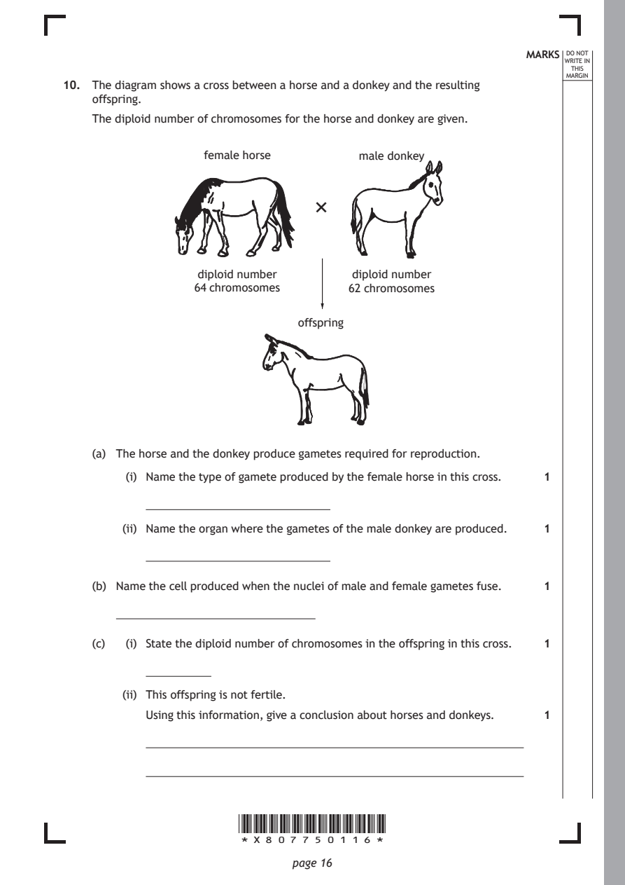
Selectable page text
MARKS _{W}^{D}_{R}^{O}_{I} _{T}^{N}OT
E IN
THIS
MARGIN
10. The diagram shows a cross between a horse and a donkey and the resulting
offspring.
The diploid number of chromosomes for the horse and donkey are given.
female horse male donkey
×
diploid number diploid number
64 chromosomes 62 chromosomes
offspring
(a) The horse and the donkey produce gametes required for reproduction.
(i) Name the type of gamete produced by the female horse in this cross. 1
(ii) Name the organ where the gametes of the male donkey are produced. 1
(b) Name the cell produced when the nuclei of male and female gametes fuse. 1
(c) (i) State the diploid number of chromosomes in the offspring in this cross. 1
(ii) This offspring is not fertile.
Using this information, give a conclusion about horses and donkeys. 1
*X807750116*
page 16PDF page 17
Paper 2, Question 11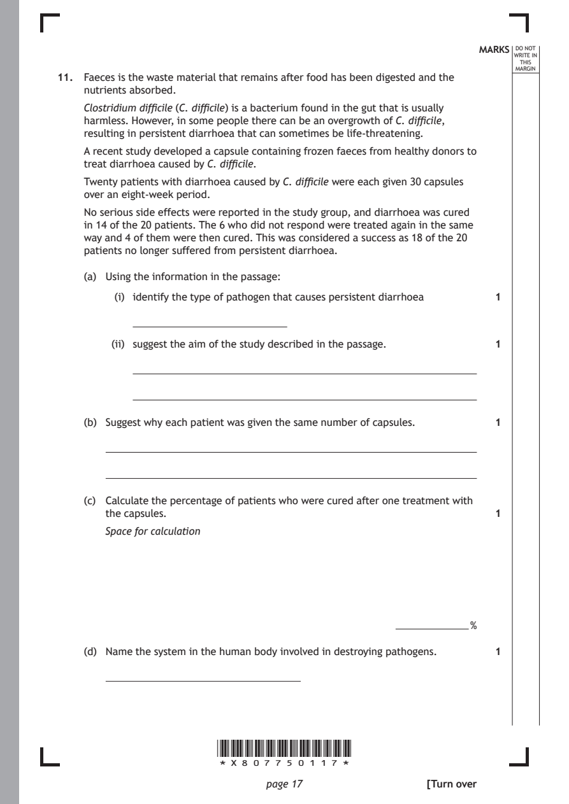
Selectable page text
MARKS _{W}^{D}_{R}^{O}_{I} _{T}^{N}OT
E IN
THIS
MARGIN
11. Faeces is the waste material that remains after food has been digested and the
nutrients absorbed.
Clostridium difficile (C. difficile) is a bacterium found in the gut that is usually
harmless. However, in some people there can be an overgrowth of C. difficile,
resulting in persistent diarrhoea that can sometimes be life-threatening.
A recent study developed a capsule containing frozen faeces from healthy donors to
treat diarrhoea caused by C. difficile.
Twenty patients with diarrhoea caused by C. difficile were each given 30 capsules
over an eight-week period.
No serious side effects were reported in the study group, and diarrhoea was cured
in 14 of the 20 patients. The 6 who did not respond were treated again in the same
way and 4 of them were then cured. This was considered a success as 18 of the 20
patients no longer suffered from persistent diarrhoea.
(a) Using the information in the passage:
(i) identify the type of pathogen that causes persistent diarrhoea 1
(ii) suggest the aim of the study described in the passage. 1
(b) Suggest why each patient was given the same number of capsules. 1
(c) Calculate the percentage of patients who were cured after one treatment with
the capsules. 1
Space for calculation
%
(d) Name the system in the human body involved in destroying pathogens. 1
*X807750117*
page 17 [Turn overPDF page 18
Paper 2, Question 12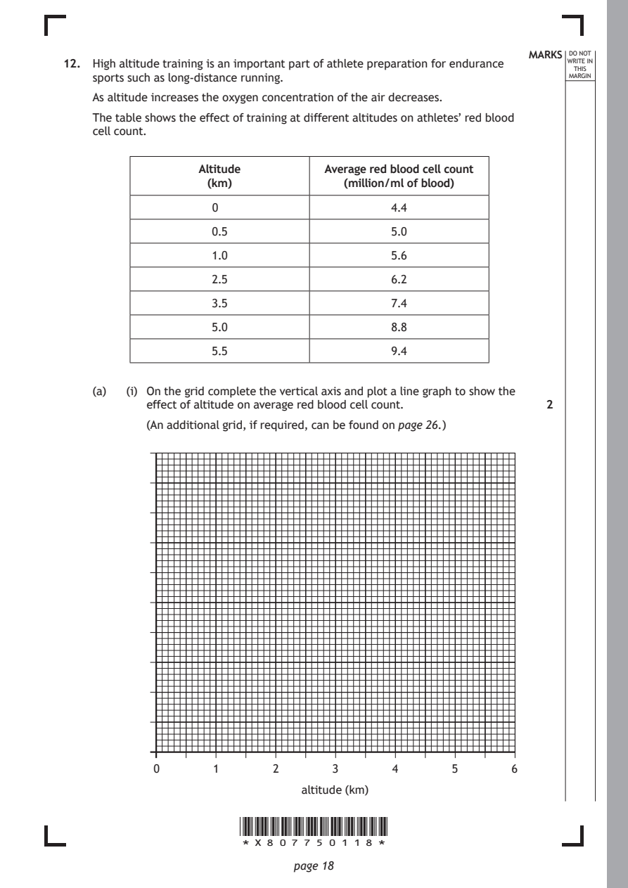
Selectable page text
MARKS _{W}^{D}_{R}^{O}_{I} _{T}^{N}OT
12. High altitude training is an important part of athlete preparation for endurance E IN
THIS
sports such as long-distance running. MARGIN
As altitude increases the oxygen concentration of the air decreases.
The table shows the effect of training at different altitudes on athletes’ red blood
cell count.
Altitude Average red blood cell count
(km) (million/ml of blood)
0 4.4
0.5 5.0
1.0 5.6
2.5 6.2
3.5 7.4
5.0 8.8
5.5 9.4
(a) (i) On the grid complete the vertical axis and plot a line graph to show the
effect of altitude on average red blood cell count. 2
(An additional grid, if required, can be found on page 26.)
0 1 2 3 4 5 6
altitude (km)
*X807750118*
page 18PDF page 19
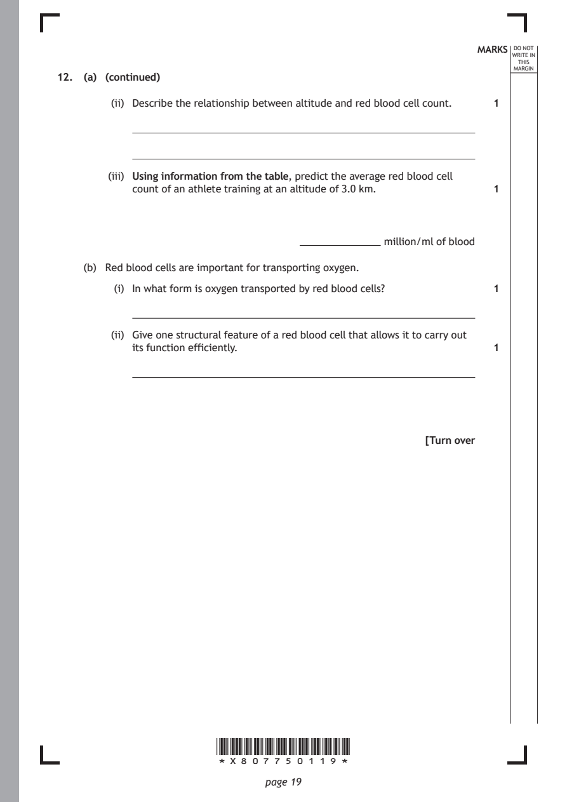
Selectable page text
MARKS _{W}^{D}_{R}^{O}_{I} _{T}^{N}OT
E IN
THIS
MARGIN
12. (a) (continued)
(ii) Describe the relationship between altitude and red blood cell count. 1
(iii) Using information from the table, predict the average red blood cell
count of an athlete training at an altitude of 3.0 km. 1
million/ml of blood
(b) Red blood cells are important for transporting oxygen.
(i) In what form is oxygen transported by red blood cells? 1
(ii) Give one structural feature of a red blood cell that allows it to carry out
its function efficiently. 1
[Turn over
*X807750119*
page 19PDF page 20
Paper 2, Question 13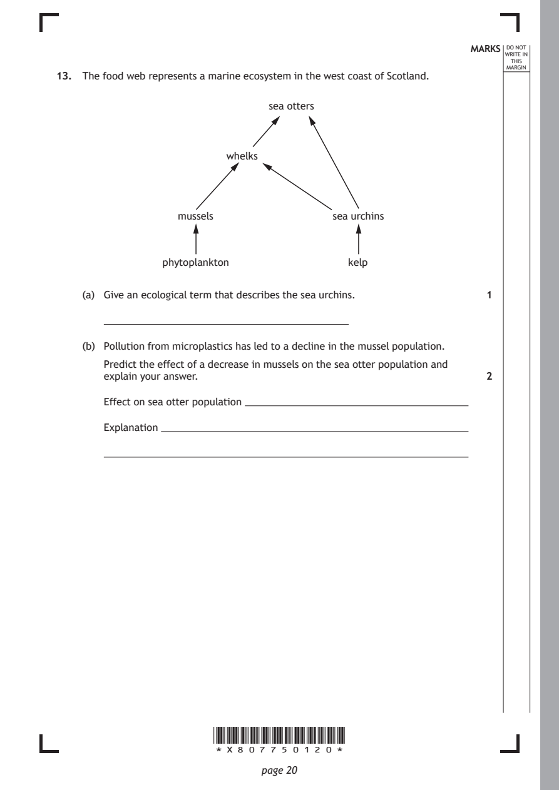
Selectable page text
MARKS _{W}^{D}_{R}^{O}_{I} _{T}^{N}OT
E IN
THIS
MARGIN
13. The food web represents a marine ecosystem in the west coast of Scotland.
sea otters
whelks
mussels sea urchins
phytoplankton kelp
(a) Give an ecological term that describes the sea urchins. 1
(b) Pollution from microplastics has led to a decline in the mussel population.
Predict the effect of a decrease in mussels on the sea otter population and
explain your answer. 2
Effect on sea otter population
Explanation
*X807750120*
page 20PDF page 21
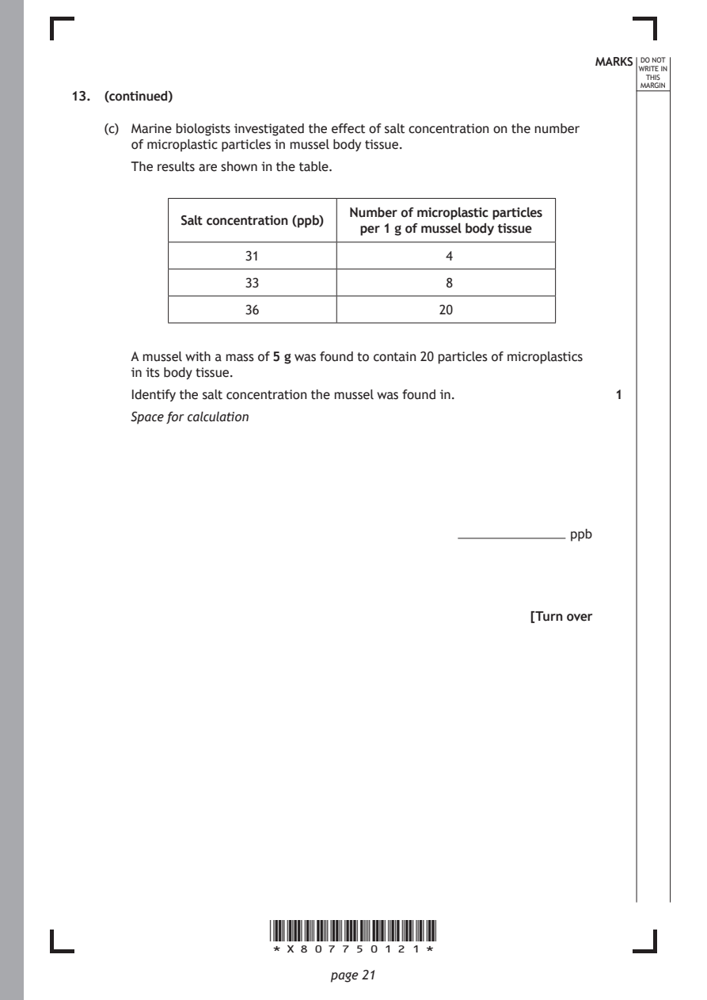
Selectable page text
MARKS _{W}^{D}_{R}^{O}_{I} _{T}^{N}OT
E IN
THIS
MARGIN
13. (continued)
(c) Marine biologists investigated the effect of salt concentration on the number
of microplastic particles in mussel body tissue.
The results are shown in the table.
Number of microplastic particles
Salt concentration (ppb)
per 1 g of mussel body tissue
31 4
33 8
36 20
A mussel with a mass of 5 g was found to contain 20 particles of microplastics
in its body tissue.
Identify the salt concentration the mussel was found in. 1
Space for calculation
ppb
[Turn over
*X807750121*
page 21PDF page 22
Paper 2, Question 14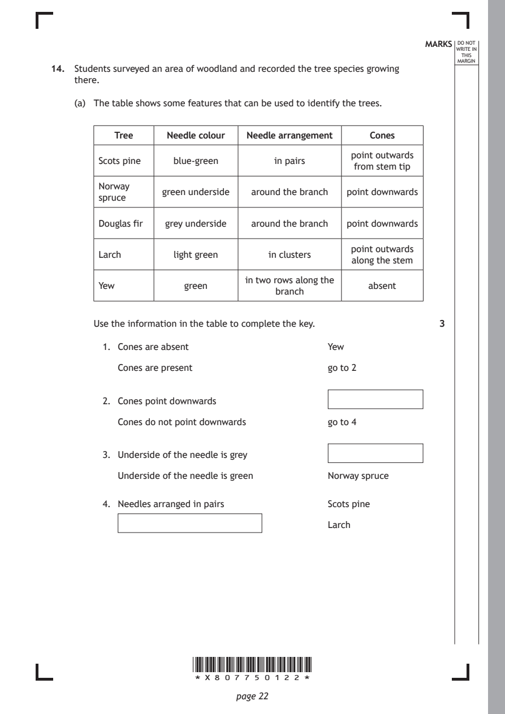
Selectable page text
MARKS _{W}^{D}_{R}^{O}_{I} _{T}^{N}OT
E IN
THIS
MARGIN
14. Students surveyed an area of woodland and recorded the tree species growing
there.
(a) The table shows some features that can be used to identify the trees.
Tree Needle colour Needle arrangement Cones
point outwards
Scots pine blue-green in pairs
from stem tip
Norway
green underside around the branch point downwards
spruce
Douglas fir grey underside around the branch point downwards
point outwards
Larch light green in clusters
along the stem
in two rows along the
Yew green absent
branch
Use the information in the table to complete the key. 3
1. Cones are absent Yew
Cones are present go to 2
2. Cones point downwards
Cones do not point downwards go to 4
3. Underside of the needle is grey
Underside of the needle is green Norway spruce
4. Needles arranged in pairs Scots pine
Larch
*X807750122*
page 22PDF page 23
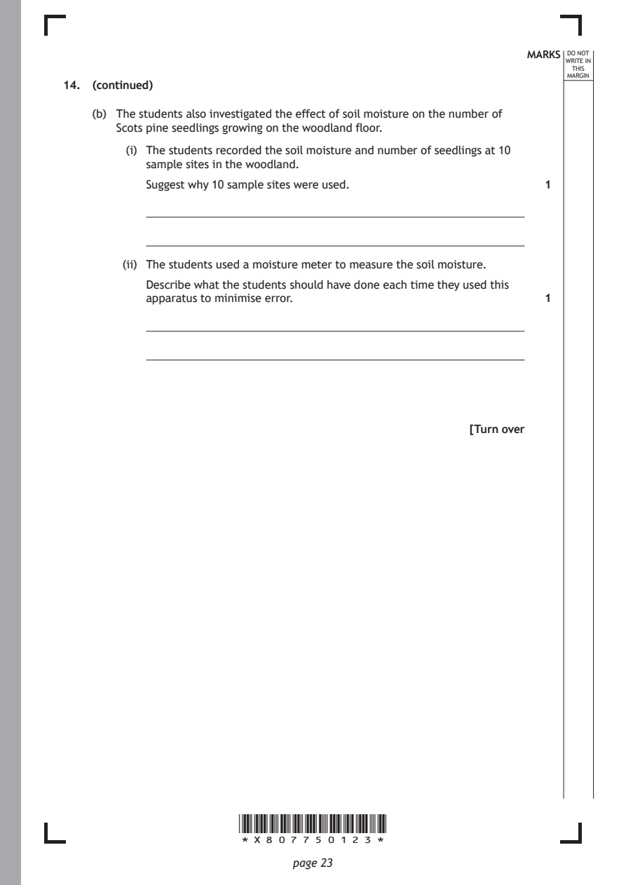
Selectable page text
MARKS _{W}^{D}_{R}^{O}_{I} _{T}^{N}OT
E IN
THIS
MARGIN
14. (continued)
(b) The students also investigated the effect of soil moisture on the number of
Scots pine seedlings growing on the woodland floor.
(i) The students recorded the soil moisture and number of seedlings at 10
sample sites in the woodland.
Suggest why 10 sample sites were used. 1
(ii) The students used a moisture meter to measure the soil moisture.
Describe what the students should have done each time they used this
apparatus to minimise error. 1
[Turn over
*X807750123*
page 23PDF page 24
Paper 2, Question 15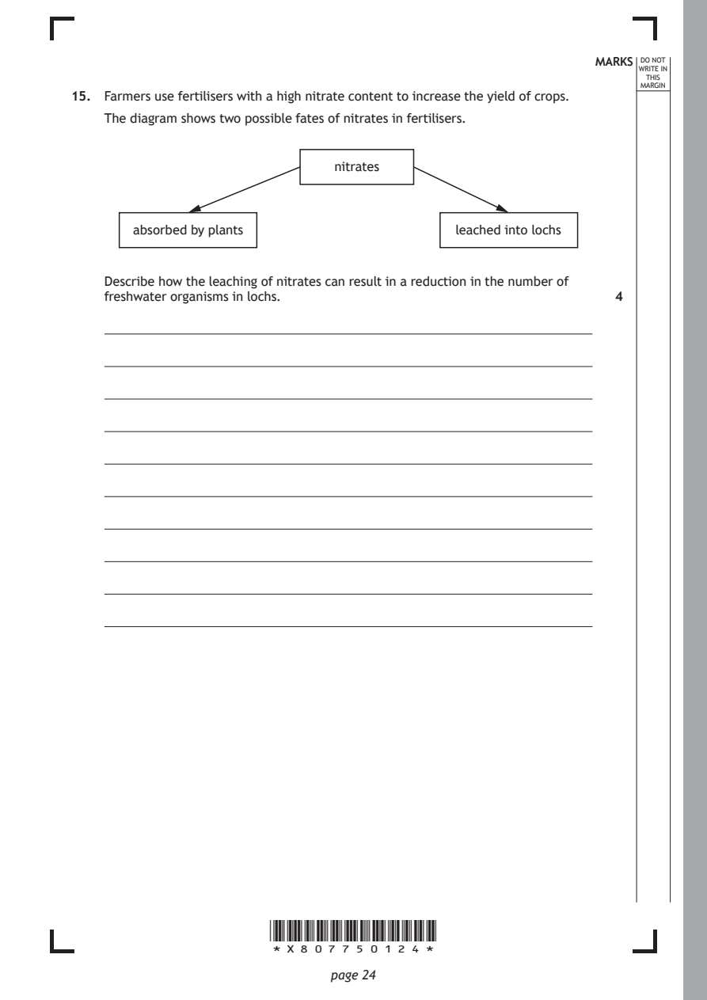
Selectable page text
MARKS _{W}^{D}_{R}^{O}_{I} _{T}^{N}OT
E IN
THIS
MARGIN
15. Farmers use fertilisers with a high nitrate content to increase the yield of crops.
The diagram shows two possible fates of nitrates in fertilisers.
nitrates
absorbed by plants leached into lochs
Describe how the leaching of nitrates can result in a reduction in the number of
freshwater organisms in lochs. 4
*X807750124*
page 24PDF page 25
Paper 2, Question 16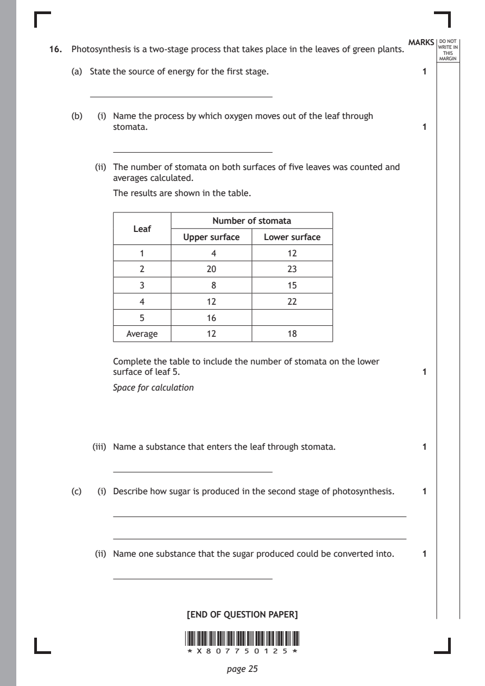
Selectable page text
MARKS _{W}^{D}_{R}^{O}_{I} _{T}^{N}OT
16. Photosynthesis is a two-stage process that takes place in the leaves of green plants. E IN
THIS
MARGIN
(a) State the source of energy for the first stage. 1
(b) (i) Name the process by which oxygen moves out of the leaf through
stomata. 1
(ii) The number of stomata on both surfaces of five leaves was counted and
averages calculated.
The results are shown in the table.
Number of stomata
Leaf
Upper surface Lower surface
1 4 12
2 20 23
3 8 15
4 12 22
5 16
Average 12 18
Complete the table to include the number of stomata on the lower
surface of leaf 5. 1
Space for calculation
(iii) Name a substance that enters the leaf through stomata. 1
(c) (i) Describe how sugar is produced in the second stage of photosynthesis. 1
(ii) Name one substance that the sugar produced could be converted into. 1
[END OF QUESTION PAPER]
*X807750125*
page 25PDF page 26
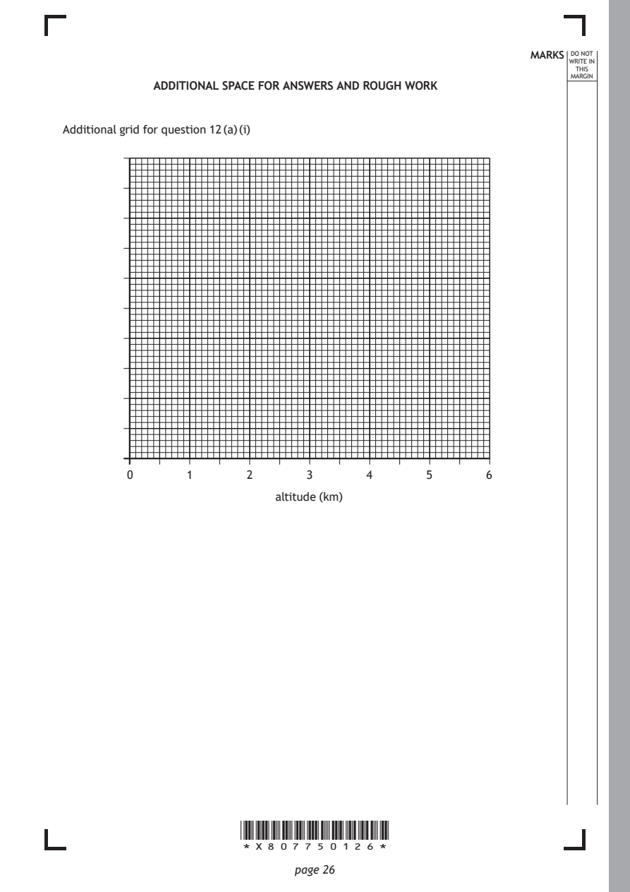
Selectable page text
MARKS _{W}^{D}_{R}^{O}_{I} _{T}^{N}OT
E IN
THIS
MARGIN
ADDITIONAL SPACE FOR ANSWERS AND ROUGH WORK
Additional grid for question 12 (a) (i)
0 1 2 3 4 5 6
altitude (km)
*X807750126*
page 26PDF page 27
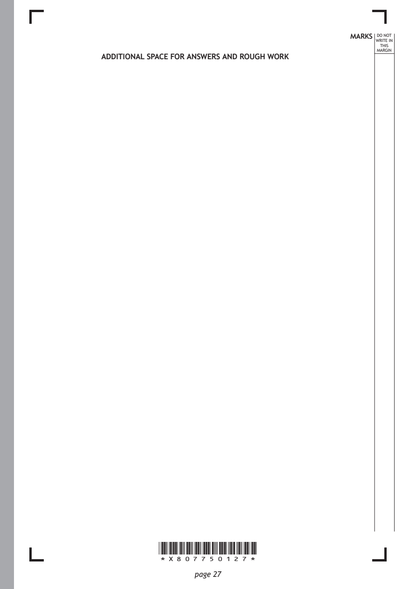
Selectable page text
MARKS _{W}^{D}_{R}^{O}_{I} _{T}^{N}OT
E IN
THIS
MARGIN
ADDITIONAL SPACE FOR ANSWERS AND ROUGH WORK
*X807750127*
page 27PDF page 28
Selectable page text
MARKS _{W}^{D}_{R}^{O}_{I} _{T}^{N}OT
E IN
THIS
MARGIN
ADDITIONAL SPACE FOR ANSWERS AND ROUGH WORK
*X807750128*
page 28